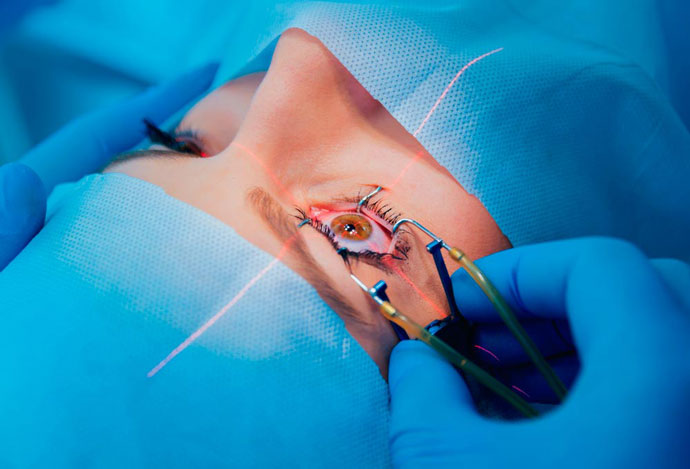

¿Cómo recuperar la visión sin cirugía?
La gran parte de la información sobre el mundo que obtenemos es con la ayuda de los ojos. La claridad de la percepción de la realidad es el componente principal de una vida cómoda.
Las enfermedades oculares son cada vez más comunes y adoptan nuevas formas. En todo el mundo, más de 4.500 millones de personas necesitan una corrección de la visión. Pero la gente tiene miedo sobre la operación, y esto por una razón: hay una enorme lista de riesgos y contraindicaciones.
En , científicos del Instituto de Investigación de Enfermedades Oculares demostraron que es posible preservar y restaurar la visión al 100% sin operaciones.
Para empezar, hablemos de lo que puede salir mal después de la cirugía para restaurar la visión
- Regresión de la miopíaEs la consecuencia más común de la cirugía. El cambio de la precisión visual después de la cirugía es impredecible. No es raro que la visión mejore inmediatamente después de la cirugía, pero después de unas semanas vuelva a su estado inicial. Dado el considerable costo de una operación de este tipo, la inversión de ese monto de dinero suele ser incómodo.
- Neuropatía ópticaEl síntoma principal es la perdida de la visión a color, la aparición de manchas oscuras sobre los ojos, la sensación de que algo impide ver, el estrechamiento del campo de visión. La enfermedad es difícil de tratar.
- Síndrome del Ojo SecoEl daño a la córnea, las terminaciones nerviosas y los canales lagrimales conduce a síntomas desagradables: ardor, dolores, y sentir resequedad en los ojos.
- GlaucomaEl deterioro de los tejidos, que puede conducir a la alteración en el proceso de formación del fluido intraocular y su salida. La consecuencia de este proceso es el glaucoma, una enfermedad ocular progresiva.
- Adelgazamiento de la retina y de la córneaCon la miopía, la retina se adelgaza y el efecto adicional del láser en ella puede conducir a consecuencias aún más graves; el desprendimiento de la retina y aún peor, la pérdida de la visión. El adelgazamiento de la córnea del ojo conduce a la aparición de queratocono, una enfermedad degenerativa del ojo en la que la córnea se adelgaza y adopta una forma cónica. En esta condición, los pacientes se quejan de luminfobia, duplicación y desenfoque de la imagen.
- Procesos infecciososPosibles complicaciones de la corrección de la visión con ayuda del láser son las queratitis, conjuntivitis, procesos inflamatorios intraoculares, etc.
- Deterioro de la visión al atardecerSe daña la percepción de los objetos circundantes al haber poca luz.

La operación para corregir la visión, como cualquier otro procedimiento tiene una serie de contraindicaciones:
- menores de 18 años;
- espesor insuficiente de la córnea;
- catarata en cualquier etapa;
- glaucoma y los riesgos de aumento de la presión intraocular;
- cambio de forma esférica de la córnea – queratocono o queratocono;
- período de embarazo y lactancia;
- diabetes mellitus y otros trastornos metabólicos;
- enfermedades descompensadas de órganos internos;
- procesos inflamatorios en el tracto visual;
- patología vascular;
- enfermedades mentales.
Una solución segura
Todas las contraindicaciones anteriores y las consecuencias de la cirugía han llevado a los científicos del Instituto de Investigación de Enfermedades Oculares a encontrar una manera segura de restaurar la precisión de la visión. El desarrollo de la fórmula tomó varios años, y en apareció el producto llamado .
Según Enrique Lara, Director Médico del Instituto de Investigación de Enfermedades Oculares, la eficacia de es comparable a una operación exitosa para restaurar la visión o a la corrección láser. Con sólo un NO: el uso de no tiene consecuencias negativas y no tiene contraindicaciones.
 Enrique Lara
Enrique Lara
Enrique además de sus palabras, cita datos de un estudio en tres etapas sobre un grupo de 2.897 voluntarios con diversas causas y grados de discapacidad visual. Como resultado de los ensayos clínicos, se obtuvieron los siguientes datos:
- Restauración completa de la agudeza visual - 95% de los estudiados
- Eliminación de cataratas en la etapa inicial e inmadura - 83% de los estudiados
- Sin efectos secundarios y complicaciones - 98% de los estudiados
" es capaz de devolver la antigua agudeza visual y restaurar los niveles al 100%. Por supuesto, ante la pérdida total de la visión, este fármaco no es eficaz, pero es bastante capaz de detener el deterioro de la visión y revertir el proceso de degeneración de la lente", concluye Enrique Lara.
El principal especialista del Instituto Nacional de Salud, Leonardo Sánchez, hizo su comentario sobre el .
Leonardo Sánchez
"La característica principal del es una composición totalmente natural que proporciona un alto efecto terapéutico. Fortalece los músculos oculares, normaliza la circulación, protege contra los cambios peligrosos de la presión. Se restaura la forma normal de la lente, el grosor de la retina y se fortalece la córnea. Es el único producto de su tipo que no tiene análogo".
Los ensayos clínicos del se han completado recientemente. El medicamento aún no está disponible en las farmacias, pero ya ha recibido toda la certificación necesaria. Se puede comprar en el sitio web del fabricante a precio promocional.
Cuando podremos ver el en los estantes de las farmacias – aún no se ha comunicado.